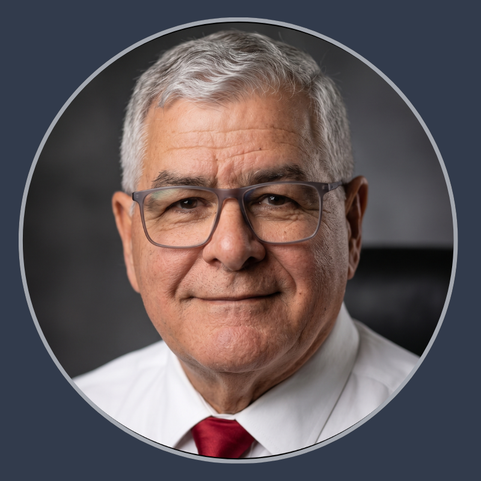

FUNDACIÓN SERVICIO PARA EL AGRICULTOR (FUSAGRI)
Consultor y experto agrícola con más de 40 años de trayectoria, con especialización en Bioeconomía Aplicada y Gestión de Proyectos de Desarrollo Rural Sostenible.
Mi carrera ha evolucionado desde el liderazgo técnico como Director General de Programas de Investigación y Asistencia Técnica, así como en Fitomejoramiento, Sistemas de Producción, Capacitación y Transferencia de Tecnología donde dirigí el desarrollo de variedades comerciales de arroz de alto impacto hacia la dirección estratégica de organizaciones dedicadas a la transformación de los sistemas agroalimentarios.
Cuento con una formación sólida en agronomía de cuarto nivel, y en los últimos años he consolidado mi especialización en Bioeconomía mediante certificaciones avanzadas del Programa de Bioeconomía Argentina y el Instituto Interamericano de Cooperación para la Agricultura (IICA).
Mi enfoque actual se centra en impulsar el desarrollo de políticas públicas para la Bioeconomía en Venezuela, con especial énfasis en la bioindustria de bioinsumos, la valorización de residuos agrícolas y la biodiversidad nacional.
- Coordinación y promoción de la Bioeconomía como eje fundamental para la transformación del Sistema Agrícola Venezolano (SAV).
- Responsable de la alianza estratégica con el IICA, gestionando el diseño y ejecución de proyectos de cooperación técnica internacional para el desarrollo rural sostenible.
- Coordinación de seminarios de alto nivel técnico sobre bioinsumos, biofertilizantes, bioprotección y biorremediación de suelos y aguas.
- Diseño y supervisión del contenido de la plataforma digital de la institución, posicionando a FUSAGRI como referente en desarrollo rural sustentable y nueva agricultura para Venezuela.
- Consultorías agrícolas especializadas para el fortalecimiento del sistema nacional de producción de semillas.
- Supervisión de programas integrales de I+D en mejoramiento genético, sistemas de producción y transferencia de tecnología en cereales y leguminosas.
- Diseño de estrategias para el Manejo Integral de Malezas en Arroz orientadas al aumento de la productividad y la sostenibilidad ambiental, logrando la difusión efectiva de resultados en redes regionales de investigación.
- Master of Science (Crop Production and Management) - University of the Philippines at Los Baños (UPLB), Filipinas (1976-1979)
- Ingeniero agrónomo - Universidad Pedro Ruiz Gallo, Perú (1971-1974)
- Facultad Agronomía - Universidad Central de Venezuela (1968-1970)
- Sostenibilidad e Innovación, Ministerio de Agroindustria y la Bolsa de Cereales de Buenos Aires (2021)
- Fundamentos de la Huella Hídrica en el sector agrícola en un contexto de Cambio Climático, IICA (2020)
- Bioeconomía. Curso Modular. Biorrefinerías, Ministerio de Agroindustria y la Bolsa de Cereales de Buenos Aires (2020)
- Primer Simposio Latinoamericano de Bioeconomía Repensando el Desarrollo Regional, IICA (2019)
- Bioeconomía: Potencial y retos para su aprovechamiento en América Latina y el Caribe, IICA (2019)
- Introducción a la Bioeconomía Argentina, Secretaría de Agroindustria y la Bolsa de Cereales de Buenos Aires (2019)
- Innovación en Fitomejoramiento: líder del programa de investigación que culminó en el desarrollo y liberación de la variedad de arroz ZETA15® e investigador asociado en la selección de la variedad MD248.
- Liderazgo en Bioinsumos: coordinador de talleres regionales para el desarrollo de cadenas de valor de bioinsumos, biofertilizantes y agentes de control biológico. Autor principal del estudio para optimización de políticas públicas de bioinsumos en Venezuela.
- Promoción del Financiamiento Climático: gestor de mesas técnicas sobre financiamiento sostenible y valores negociables verdes para la inversión agrícola climáticamente inteligente.
- Fomento de la Bioeconomía Azul: autor del estudio estratégico sobre las Oportunidades de Bioeconomía Azul en Zonas Costeras de Oriente y el Golfo de Venezuela, promoviendo el cultivo sostenible de macroalgas y su inserción en cadenas de valor globales.
- Técnicas: gestión de proyectos de desarrollo rural sostenible (planificación, ejecución, seguimiento y control).
- Estratégicas: formulación de políticas públicas bioeconómicas, gestión de fondos de cooperación internacional.
- Digitales: webmaster enfocado en comunicación y extensión agrícola.
- Informáticas: lenguaje R y empleo de IA.
- Trabajo en equipo y comunicación
- Confiabilidad
- Pensamiento crítico
- Iniciativa
- Resolución de problemas
- Aprendizaje continuo